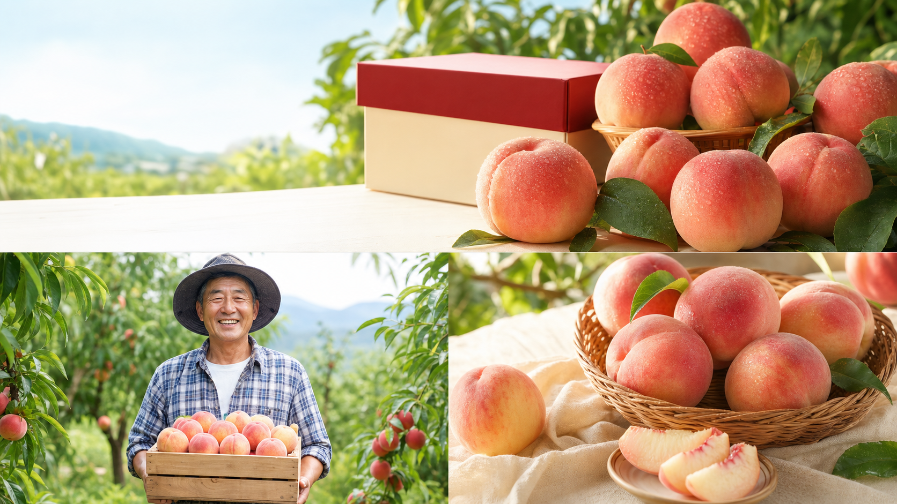
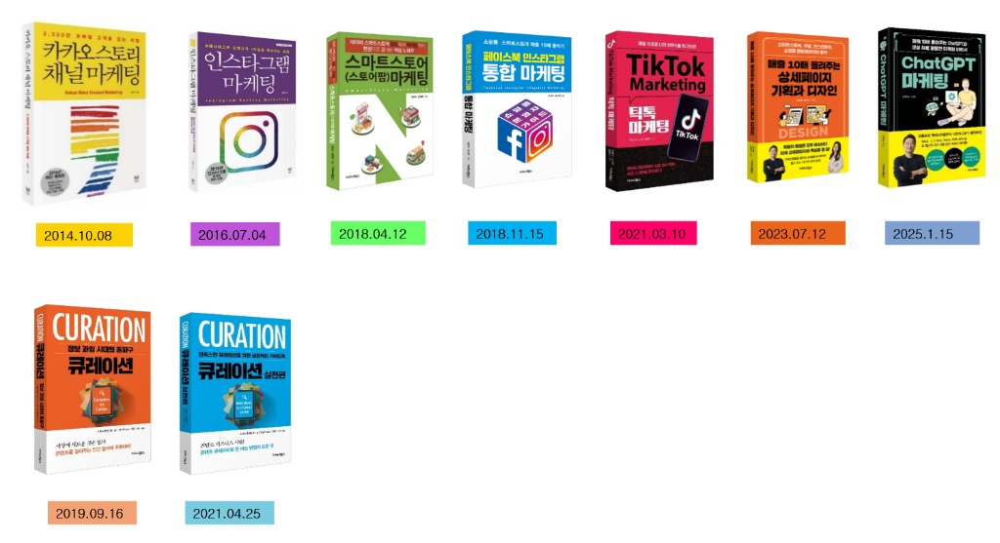

무엇을 만들지
고객의 질문에서 콘텐츠 주제를 찾습니다.
AI 구독료는 매달 나가는데,
콘텐츠·광고·홈페이지·AI 직원까지.
내 사업에 쓰는 방법을 실제 사례로 보여드립니다.
참가비 0원 · 한국시간 · 녹화본 미제공
AI를 쓰고도 일이 줄지 않았다면
글은 만들었는데 문의받는 길은 없고, 채널마다 다시 올리고, 고객 문의와 자료 정리는 여전히 직접 하고 있나요?
콘텐츠는 만들지만문의로 이어지는 동선이 없다
채널은 늘었지만매번 같은 일을 다시 한다
도구는 많지만내 사업에 무엇부터 쓸지 막막하다
콘텐츠 다음에, 고객의 행동을 설계하세요.
고객의 질문에서 콘텐츠 주제를 찾습니다.
관심을 문의와 신청으로 연결합니다.
반복 업무를 AI와 나눌 순서를 정합니다.
활용 예시
결과물을 만드는 데서 멈추지 않고 고객의 문의와 반복 업무까지 이어지는 흐름을 살펴봅니다.
상품을 보고도 어디로 문의할지 모를 때
상품 설명부터 상담 신청까지 한 화면의 동선으로 연결합니다.
상품은 좋은데 보여줄 콘텐츠가 부족할 때
한 가지 상품을 글·이미지·세로 영상으로 확장해 고객 접점을 늘립니다.

자료 정리와 반복 응대에 시간을 빼앗길 때
콘텐츠 기획, 자료 정리, 보고서 초안을 역할별 업무 흐름으로 나눕니다.
내 사업에 적용할
첫 번째 장면을 정해보세요.
콘텐츠 → 고객 접점 → 상담과 신청 → 반복 업무 정리
제55차 무료특강
AI 마케팅과 SNS 수익화를 내 사업의 실행 순서로 정리해 보세요.
고객의 질문과 내 상품에서 시작합니다.
한 가지 소재를 여러 고객 접점으로 넓힙니다.
콘텐츠 다음 행동을 분명하게 만듭니다.
문의 동선과 반복 업무를 한 흐름으로 봅니다.
내 사업에 적용할 첫 번째 일을 선택합니다.
실제 사례를 살펴보고, 내 사업에 적용할 순서를 정리합니다.
강사 소개

실습 중심 · 결과물 중심 · 사업 적용 중심

무료특강 신청
2026년 9월 18일(금)
저녁 8시–10시 30분 · 한국시간
네. 실제 활용 사례를 중심으로 설명해 코딩이나 전문 디자인 경험이 없어도 참여할 수 있습니다.
이번 무료특강은 녹화본을 제공하지 않습니다. 9월 18일 저녁 8시부터 실시간으로 참여해 주세요.
무료특강 신청과 유료 과정 등록은 별개입니다. 유료 등록은 별도로 결정할 수 있습니다.
더 깊은 실습은 AI마케팅스쿨 17기에서
10월 8일(목) 개강 · 12주 유료 과정